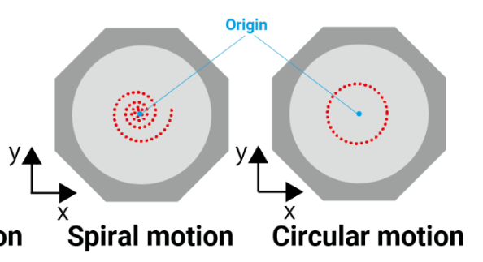
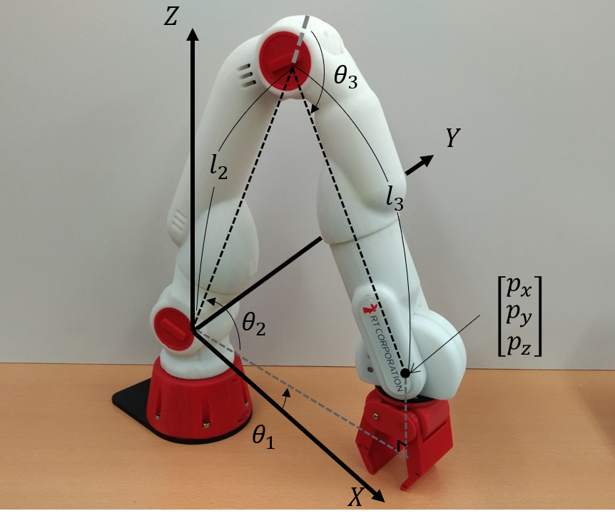
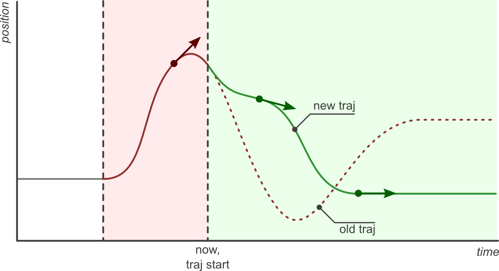
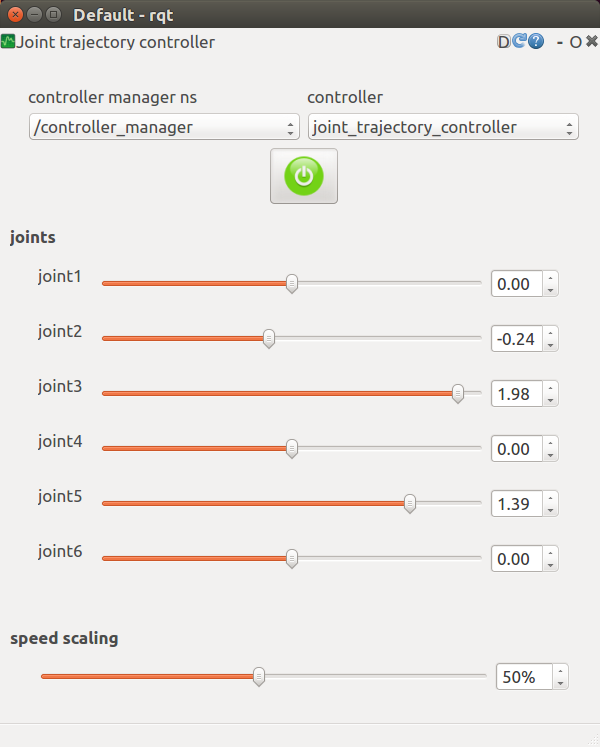
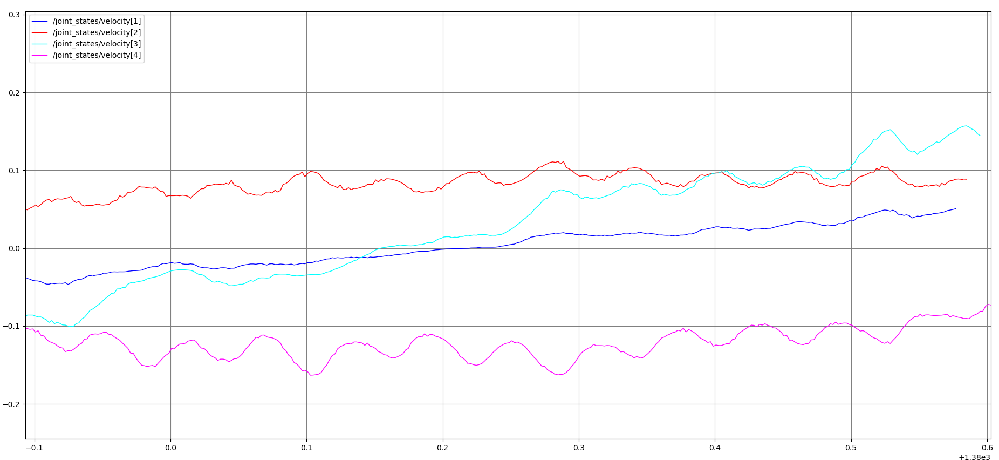
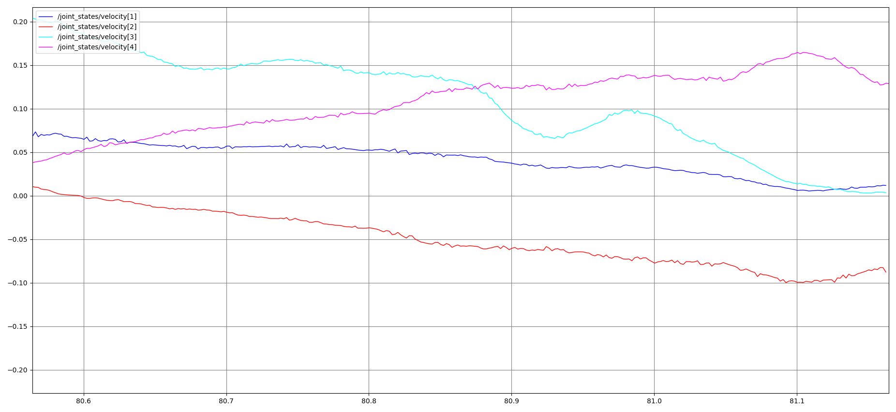
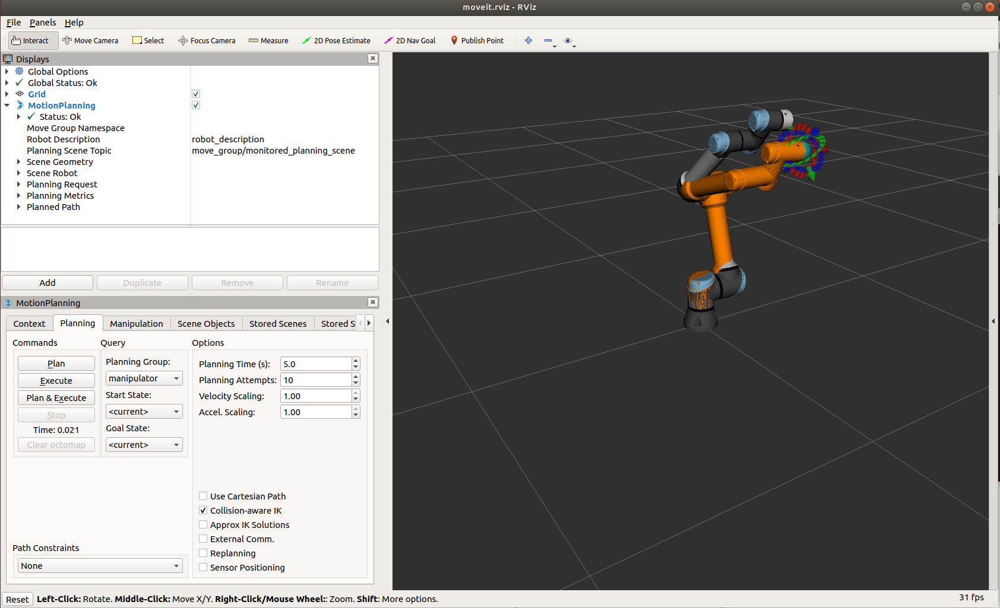
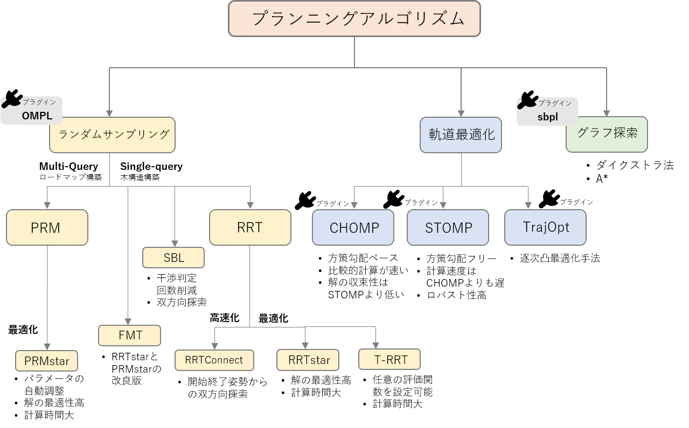

ゼロからのROS2
位置制御とモーションプランニング
大阪大学 中島優作
ロボット制御参考資料
本スライド(実践)、教科書(理論)の併用がおススメ
イラストが豊富で分かりやすいながらも基礎的な数式を扱っていて最初に読むのにちょうど良い
最も基本の位置制御まで扱っている

教科書「ロボット制御基礎論」を現在版にブラッシュアップ、理論的な詳しさと実装面までの手引きが充実
位置制御とは
手先を目標の位置・姿勢へ動かす制御。動かし方は大きく3種類
①②は振り返り、③がROSで加わる部分↓
振り返り：PTPとCP
経路を規定しない・関節空間で補間
→ UR:
movej()
TCPの経路形状を規定・直交空間で補間
→
movel()
→
movec()
→ ROSで自作
ROSを使う動機：CPを直線・円弧だけでなく、らせんなどの複雑な軌道にしたい
詳しくは ロボットアーム入門 ~ロボットの基本操作~ の第8章
③ パスプランニング
- ゴールと障害物だけ与えると経路を自動で計算
- 付属コントローラには基本的にない機能
- ROSではMoveItが担当
ROSを使う利点
ROSコントローラ
- PC上で完全に動作を計算して実行できる
- 軌道制御などをさせたいときはこっち
付属コントローラ
- 初期・最終姿勢は指定できるが中間の動きは指定できない
- 直線など単純な動きならこちらで十分
本スライドでは軌道制御の実装を扱います
- 実装方法1: JointTrajectoryController
障害物回避なしのモーションプランニング
常に接触するタスクで便利 - 実装方法2: MoveIt
障害物回避ありのモーションプランニング
ピッキングなどで便利
JointTrajectoryControllerってどういう意味？
ROSのコントローラの命名則↓
アーム制御則は組合せ
ROSコントローラ命名則 = 3つの組合せ
position_controllers/JointTrajectoryController
モータへの指令 / 指定する座標 + やりたいこと
関節空間と直交空間の指令
アプリ全画面 ／ 左は関節を1つずつ、右は手先を直線に動かして軌跡を比べてみよう
よく使うROSの関節空間の
アームコントローラ
参考: joint_trajectory_controller.md
✅ ROS標準 (ros2_controllers に同梱)
- position_controllers/JointTrajectoryController
- velocity_controllers/JointTrajectoryController
よく使うROSの直交空間の
アームコントローラ
position_controllers→velocity_controllersでも利用可能
- position_controllers/CartesianMotionController
市販だと位置/速度制御が多い

世の中のロボットのほとんどは位置/速度制御
position_controllers, velocity_controllersのみ使用可
トルク（電流）ベースの制御は 力制御のスライドで扱います
- Universal Robot
- DENSO
- その他多数
ロボットドライバの準備
UR用コントローラ
JointTrajectoryController
- ROSを使ったロボットアーム制御で一般に使われるコントローラです
ScaledJointTrajectoryController
- Scaled = URのタブレットの速度スライダーの倍率を反映する
- 例えば速度スライダーが1%の場合、これがないとROSは100%の速度で計算し制御がずれます
今回は UR を使用するため、UR 用コントローラとして ScaledJointTrajectoryController を利用します。
[復習]URのパッケージを取得
- ここではユニバーサルロボット(UR)を扱います
- URのパッケージ詳細→ Universal_Robots_ROS2_Driver
- ※The Constructを使っている人は環境立ち上げの度にインストールが必要なので注意
# キーが期限切れの場合があるので念のため更新します
curl -s https://raw.githubusercontent.com/ros/rosdistro/master/ros.asc | sudo apt-key add -
sudo apt update &&
# ユニバーサルロボットのROSパッケージをインストールします
sudo apt install ros-${ROS_DISTRO}-ur
# ユニバーサルロボットのROSパッケージの動作確認
ros2 launch ur_description view_ur.launch.py ur_type:=ur5e
[復習]ROS 2 control を更新
Mock Components が起動しない場合、controller_manager と
realtime_tools の不整合で落ちることがあります。まず関連パッケージを更新します。
sudo apt update &&
sudo apt install --reinstall \
ros-humble-realtime-tools \
ros-humble-controller-manager \
ros-humble-ros2-control \
ros-humble-ros2-controllers \
ros-humble-joint-state-broadcaster \
ros-humble-joint-trajectory-controller \
ros-humble-ros2controlcli
xacroファイルの作成更新
起動用Launchの作成
起動用Launchの作成2
動作テスト
- ビルドします
cd ~/ros2_ws
colcon build
source install/setup.bash
ros2 launch ros_study ur5e_bringup_for_real_robot.launch.py
ros2 run rqt_joint_trajectory_controller rqt_joint_trajectory_controller
GUIのスライダーを動かして、RViz上のロボットが動くことを確認できれば成功です。
JointTrajectoryControllerによるアーム制御の基本
JTCとは
JTCの実装4ステップ
（JTC = JointTrajectoryController）
- 手先のwaypoints決定
- 逆運動学
- 軌道・軌跡生成
- 実行
step1:waypointsの計算

- 目標の姿勢をたくさん並べてwaypointsを作成
- 例：円やらせんの上に点を並べる
手先姿勢の表現
位置(position)+向き(orientation)=姿勢(pose)
- 位置：XYZの3つで表す
- 向き：手先座標系の傾き
- 向きの表し方は複数ある（オイラー角・クォータニオン…）
- ROSではクォータニオンをよく使う
オイラー角による表現と課題
- 利点
- 直観的
- 3つの角度（Roll, Pitch, Yaw）で表現
- 課題
- ジンバルロックを避ける必要
- 軌道補間で不自然な動きになることがある
クォータニオンによる表現
- 利点
- ジンバルロックが発生しない
- 回転軸と回転角で表現
- 数値的に安定
- 課題
- 直観的理解が困難
- 4つの要素（w, x, y, z）で表現
- 正規化が必要
クォータニオンってなに？
- どんな向きも1本の軸まわりの1回の回転で表せる
- その軸と角度を4つの数に詰めたもの
w = cos(θ/2)
(x, y, z) = n·sin(θ/2)
例：z軸まわりに90° → (w, x, y, z) = (0.707, 0, 0, 0.707)
ジンバルロックしない理由
- ジンバルロックは「軸を順番に回す」表し方の副作用
- クォータニオンは向きを丸ごと1つの回転として持つので、特別な角度がない
なぜ正規化が必要？
- qで回すとベクトルの長さは|q|²倍
- |q| ≠ 1 だと回転に伸び縮みが混ざる
- 計算を重ねると誤差が積み重なって|q|が1からずれる
- → q / |q| で長さ1に戻す
クォータニオン補間の利点
- SLERP (Spherical Linear Interpolation)
- 球面上の最短経路で補間
- 角速度が一定
- 滑らかな軌道生成
- オイラー角の線形補間との比較
- より自然な回転軌道
- ジンバルロック回避
- 計算効率が良い
なぜ球面線形補間（SLERP）？
- クォータニオンは球面の上の点
- 線形補間は球の内側を通る → 回る速さにムラ
- 位置は綺麗でも向きの変化が不均一 → 手首が一部で急に速く回る
- SLERPなら一定の角速度で回る
クォータニオンを扱う方法
- TF
- ROS標準
- ROS専用の型を使えるのが便利
- Scipy Rotation
- ROS不要でクオータニオンの計算が可能
- SLERPもあるので僕はよく使う
姿勢の表現 - 使い分け
おすすめ：両端はオイラー角で書く → クォータニオンに変換 → SLERP → ROSへ
ROSのメッセージ（geometry_msgs/Pose）はクォータニオンしか受け付けない点に注意
step2:逆運動学(IK)

XYZでロボットの手先姿勢を指定したい
ただ、動かせるのはロボットの関節
そこで手先姿勢→ロボットの関節の計算をする(逆運動学,IK=InverseKinematics)
IKの解き方は2種類
- 解析解：ロボットの形から式を作り、代入して一発で解く
- 速い・解が全部出る／ロボットごとに式が要る
- 数値解：今の姿勢から少しずつ近づける（反復計算）
- どのロボットでも使える／初期値しだいで失敗も
今は汎用性が高く、速度・精度も十分な数値解が主流
数値解のカギ：ヤコビアン
- ヤコビアン J：関節を少し動かすと手先がどれだけ動くかの表
- Δx ≈ J Δq（関節の微小変化 → 手先の微小変化）
- 逆向きに使うと Δq ≈ J⁻¹ Δx（正方でなければ疑似逆行列 J⁺）
- 目標との誤差を Δx として少しずつ詰める → 繰り返すと解に収束
IKの式を解かなくても、J さえ計算できれば数値的に解ける
J の詳細は「速度・加速度制御」の章で
補足：2種類のヤコビ行列
| ヤコビ行列 | 基礎ヤコビ行列 | |
|---|---|---|
| 作り方 | 手先姿勢（位置＋オイラー角）の式を q で偏微分 | 根元のリンクから手先へ漸化的に外積で計算 |
| 計算量 | 自由度が増えると微分が大量で重い | 外積だけなので軽い |
| 得られるもの | J(q) が q の式（解析解）で得られる | 今の姿勢での数値だけ |
| 特異姿勢 | 式から事前に求められる | 事前には求めにくい |
今は計算が速いので、数値解をたくさん求めれば十分実用的
→ 基礎ヤコビ行列を使うことが多い
補足：基礎ヤコビ行列の作り方
- 根元のリンクから順に、各関節の軸 zᵢ と位置 pᵢ を求める（順運動学のついで）
- 手先速度ベクトル V = (v, ω)（並進速度＋角速度）を定義し
基礎ヤコビ行列 JB：V = JB q′ を使う - 関節 i の列 = [ zᵢ × (p − pᵢ) ; zᵢ ] → 外積だけで計算できる
姿勢誤差は回転ベクトルで表して JB に掛ける（KDL などもこの方式）
特異姿勢（特異点）とは
- J のランクが落ち、手先をある方向へ動かせない姿勢
- 手先速度 v を指令すると q′ = J⁻¹ v が発散 → 関節が急回転
- 一番困るのは速度の計算（直線動作・サーボ制御）
- IK でも数値解が不安定に／解（肘上・肘下）がここで合流
対策：特異点を避けた経路・PTP（関節補間）で通過・DLS
特異姿勢は3種類
- 肩：手首中心が J1 軸の真上 → J1 が急回転
- 肘：腕が伸びきる（J3 = 0）→ 外へ動けない
- 手首：J5 = 0 で J4 と J6 が一直線 → J4・J6 が逆向きに急回転
どれも手先は一定速度なのに、近くを通るだけで関節速度が上限を超える
数値解のしくみ：ニュートン法
- f(x) = 0 の x を、接線をたどって探す方法
- 数ステップで答えにぐっと近づく
- IKでは
- x → 関節角 q
- f → 目標と手先の誤差 e
- 傾き → ヤコビアン J
タブ③で実際のアームに当てはめた様子が見られる
KDL と TRAC-IK の違い
- KDL：ニュートン法そのもの
- 関節制限にぶつかると行き詰まることがある
- TRAC-IK：KDL＋SQP を同時に走らせ、行き詰まったら別の初期値からやり直す
- 成功率が高い → UR の MoveIt でもデフォルト
- IKFast：解析解を自動生成（タブ②）
MoveItのIKソルバーの利用
MoveItのIKソルバーをROS Serviceを介して使うのが簡単
通信時間がかかるので大量のIKには使いにくい、数点のIKなら実用的
Pythonで使えるIKソルバー
大量のIKを解く際は以下のようなIk用ライブラリを直接使うのが良い
- TRAC-IK-PYTHON(オススメ) - MoveItでも使われている手法, 安定性と計算速度のバランスが良い
- Pinocchio - 最先端の剛体アルゴリズムを実装したライブラリ, Franka Roboticsのライブラリでデフォルト
step3:軌跡・軌道生成
- JTCには少なくとも
positionsとtime_from_startを渡せば軌道になる - 振動を抑えたいときは速度・加速度も渡す（→ 速度・加速度制御の章）
※軌跡と軌道の言葉の定義は書籍「実践 ロボット制御」に従っています
ロボットはどう動いている？
付属コントローラの movel などと違い、途中の軌道もすべてROS側が決めている
step4:実行
JointTrajectoryの送信方法
- Topic(こっちは簡易的、もしくは連続でGoalを 送る場合)
- /joint_trajectory_controller_name/commandに送信
- 送ったら直ちに動作を実行、途中で止められない
- Action(基本はこっちを使う)
- /joint_trajectory_controller_name/FollowJointTrajectoryに送信
- 目標到達までの状態確認や途中変更も可能
Actionで送った場合の利点

参考資料: joint_trajectory_controller.md
- 途中でキャンセルしたり、軌道を変更して滑らかに繋ぐことができる
- 即時に反映したいとき以外は基本的にActionを使うべき
JointTrajectoryControllerのテスト方法

- rqt_joint_trajectory_controller_guiが便利
- JointTrajectoryControllerが正常に動いているのかをテストするときなどに使える
実行の中身：PID 制御
- P：誤差に比例した指令で目標へ近づける（基本）
- I：誤差を積算し、残り続けるずれ（重力・摩擦などの偏り）を消す
- D：誤差の変化の速さを見て、行き過ぎ・振動を抑える
- UR などはロボット内部で回っている（JTC の gains は速度/トルク指令時）
位置制御は PD、力制御は PI
| 位置制御 | 力制御 | |
|---|---|---|
| 基本 | PD（ずれが残るなら PID） | PI（目標力のフィードフォワード＋PI） |
| D | 収束を速め、振動を抑える | 急変・ノイズを増幅 → 制御の遅れで発散しやすい |
| I | P だけでも動くことが多い。重力・摩擦の偏りが残るときに足す | 摩擦などの偏りを消すのに必要 |
JTCの実装例
| 目標姿勢の決定 | ：Scipy Rotation Module |
| 逆運動学 | ：MoveIt IK Solver(TrackIK) |
| 軌道生成 | ：JointTrajectoryController |
| 軌跡生成 | ：JointTrajectoryController |
| 実行 | ：JointTrajectoryController |
JointTrajectoryControllerの実装
関節を指定して補間するだけのシンプルなデモ
ros_study/ros_study/jtc_demo.pyに以下を保存
entry_points を追加
※スライドでは設定済みのファイルです
buildと実行
cd ~/ros2_ws
colcon build
source install/setup.bash
ros2 run ros_study jtc_demo
JTC + IKの実装
ros_study/ros_study/jtc_with_ik_demo.pyに以下を保存
buildと実行
cd ~/ros2_ws
colcon build
source install/setup.bash
ros2 run ros_study jtc_with_ik_demo
JointTrajectoryControllerによるアームの速度・加速度制御
速度・加速度制御は必要か？
ここまで紹介した手法の課題
- 急加速、急減速
- 動作に振動が出やすい
軌道補間の方法
同じ経由点でも、点の間のつなぎ方（補間）で動きと揺れが変わる （アプリ全画面）
※教科書の時間多項式とスプラインは等価（2点→時間多項式、複数点→スプライン）
補間方法の比較まとめ
| 補間方法 | 計算コスト | 滑らかさ | 連続性 | 適用場面 |
|---|---|---|---|---|
| 線形補間 | 低 | 低 | C⁰（速度が飛ぶ） | 高速動作・簡単制御 |
| 3次スプライン | 中 | 中 | C¹（加速度が飛ぶ） | 一般的なロボット制御 |
| 5次スプライン | 高 | 高 | C²（ジャークが飛ぶ） | 高精度作業・振動抑制 |
| 台形補間 | 低 | 中 | C¹（加速度が飛ぶ） | 高速動作・効率重視 |
迷った場合は3次スプラインが無難
関節速度計算はなくても良い

waypointsが少ないと波打つ

waypointsを増やす滑らか
- 2点であれば「速度 and/or 加速度を0」
- 3点以上であっても十分細かいwaypointsをとれば「速度 and/or 加速度を0」でも割となめらか
※ ただし全点で速度0 ＝ 全点で一度止まる動き。詳しくは次章「軌道の滑らかさ」
それでも厳密な速度計算が必要という方は↓
JTCの補間次数の決まり方
| JointTrajectoryPoint に入れた情報 | 実際の補間 | 連続性 |
|---|---|---|
| positions のみ | 線形 | C⁰（速度が飛ぶ） |
| positions + velocities | 3次（Hermite） | C¹（加速度が飛ぶ） |
| positions + velocities + accelerations | 5次 | C² |
- 5次の6係数 ＝ 両端の 位置・速度・加速度（3条件 × 2）→ C² でつなぐため
- positions だけ送るとJTCは線形補間 → 経由点で速度が飛ぶ
補間次数を比べる
アプリ全画面 同じ waypoint でも、点に入れる情報で加速度の形がまったく変わる
※ 5次でも節点で連続なのは加速度まで。ジャークは節点で折れる（実用上は十分）
速度・加速度つき JTC 実装
関節速度の計算方法
ヤコビアンとは
- 関節速度 → 手先速度
- 微分の連鎖律から導出
- 関係式：v = J * q̇
- v: 手先速度ベクトル（6次元）
- J: ヤコビアン行列（6×n）
- q̇: 関節角速度ベクトル（n次元）
逆ヤコビアンによる手先速度の計算
逆ヤコビアン
- 手先速度 → 関節速度
- 式：q̇ = J⁻¹ * v
Jが正方行列でない場合は？
- 疑似逆行列：J⁺ = Jᵀ(JJᵀ)⁻¹
- 特異点対策：Damped Least Squares
- 冗長性解決：Null Space制御
軌道の滑らかさ：ブレンド半径からROS実装まで
ティーチングペンダントの「ブレンド半径」と ROS の軌道生成は
同じ式 an = v² / ρ でつながっている
PTP / CP
movej / movel / movec
ブレンド半径
なぜ丸めるのか
G と C の対応
とジャーク
幾何 → 時間則
→ 補間
①② は ロボットアーム入門 ~ロボットの基本操作~ の第9章で扱った内容です
復習：止まるか丸めるか
角（ρ = 0）は止まるしかない／丸めれば vmax = √(amax ρ) アプリ全画面
幾何の滑らかさ(G)と時間の滑らかさ(C)を分ける
G：幾何連続性
経路の形の滑らかさ
どんな速さでなぞっても変わらない
C：時間連続性
時間の関数 p(t) としての滑らかさ
モータが実際に受け取る量
速度 > 0 で通過するとき、Gk の経路からは Ck の軌道までしか作れない
G と C の対応
| 経路の形（G） | 止まらずに通ると | 実際どうなる |
|---|---|---|
| G⁰：角がある | C⁰ まで | 通過不可。止まるしかない |
| G¹：円弧ブレンド | C¹ まで | 通れる。トルクが段差状に飛ぶ |
| G²：曲率連続（クロソイド等） | C² まで | トルクが連続。実用上の合格線 |
形が Gk なら、どんな時間則でも Ck が上限
「振動させない」には形から G² にする
C⁰/C¹/C² で何が飛ぶかは「速度・加速度制御」の章を参照
なぜ G¹ では C² にできないのか
- 直線 → 円弧の境目で曲率 κ = 1/ρ が段差状に跳ぶ
- an = v²κ を連続に保つには v² が逆向きに跳ぶ必要がある
- 速度 v は連続なので不可能。例外は v = 0 のときだけ
- → 曲率の不連続は加速度の段差を強制する
加速度 ＝ 時間則 ＋ 幾何
p″ = s″ t（時間則・接線方向）＋ (s′)² κ n（幾何・法線方向）
アプリ全画面 経路が完璧な円弧でも、時間則が台形なら加速度は段差。逆も同じ
なぜジャークまで気にするのか
段差で変わる
ステップ状に変わる
有限剛性＝ばね
残留振動
- ステップは広い周波数成分を持つ → 第1固有モードを必ず叩く
- 振動が収まるまで待つ → 位置精度とサイクルタイムの両方を失う
- モータ電流もインダクタンスでステップに追従できない → 追従誤差
- → ジャークを制限した Sカーブ プロファイルが使われる理由
台形速度 vs Sカーブ
アプリ全画面 Sカーブは動作時間が少し伸びるが、整定まで含めると速く終わることが多い
ROS の軌道生成は3段構造
① 幾何パス
OMPL / compute_cartesian_path
出力：関節空間の密な点列
（時間情報なし）
✓ 衝突回避・経路の形
✗ 角があれば残る（G⁰）
② 時間パラメータ化
TOTG（＋ Ruckig で平滑化）
出力：各点に時刻・速度・加速度
✓ 速度・加速度の上限
✗ TOTG はジャーク無制限
③ 補間
joint_trajectory_controller
入力：JointTrajectory
点と点の間を多項式でつなぐ
✓ 5次なら節点で C²
✗ 点の情報が欠けると次数が落ちる
この流れ自体は標準的な正攻法。ただしチェックすべき点が5つある↓
チェック①：幾何精度は密度で解決できる
e ≈ Δ² / (8R)
- 直交空間で密にサンプリング → IK → 関節空間でつなぐ
- ずれは弦と弧の差で Δ² に比例して縮む
- 例：Δ = 10 mm, R = 100 mm → e ≈ 0.13 mm
- MoveIt の compute_cartesian_path（eef_step）がやっていること
チェック②：5次が本当に5次になっているか
point = JointTrajectoryPoint()
point.positions = q
point.velocities = dq # 空だと線形補間
point.accelerations = ddq # 空だと静かに3次に落ちる
- accelerations が空だとエラーにならず静かに3次に落ちる
- 点が密なほど、次数が落ちたときの段差が頻繁に出る
入れる情報と補間次数の対応・比較アプリは「速度・加速度制御」の章
チェック③：時間パラメータ化はジャークを抑えているか
- MoveIt 2 の既定 TOTG（Time-Optimal Trajectory Generation）は時間最適
- 時間最適 ＝ 常にどこかの制約が飽和 ＝ 加速度は bang-bang
- 5次で C² につないでも、入力の加速度が飽和値を行き来すれば急変する
- ジャークを抑えたいなら Ruckig（MoveIt 2 の AddRuckigTrajectorySmoothing）
チェック④：密にしすぎても滑らかにはならない
- 制御周期より短い区間は意味がない
- UR：CB3 系 125 Hz（8 ms）、e-Series 500 Hz（2 ms）
- 区間が極端に短いと5次多項式の係数が悪条件になり、わずかな不整合が高周波成分になる
- 密にするほど、節点の不連続が高周波になるだけ
- 滑らかさを決めるのは密度ではなく、節点での連続性の次数
※ 前章の「速度・加速度を 0」にする方法は、全点で止まる（全点が r = 0 の停止点）のと同じ。補間次数のアプリで確認できます
チェック⑤：角は密にしても消えない
- 直交経路に鋭い角があると、密にサンプリングしても角は点と点の間に残る
- 時間パラメータ化は加速度制約を守るので、角で自動的にほぼ停止まで減速
- ＝ ブレンド半径を使わない代わりに、角で勝手に遅くなる
- 速度を保ちたいなら、幾何の側で自前のブレンドやスプラインを入れる
「精度と速度の交換」はレイヤーを変えても消えない
おまけ：特異点
- 直交空間で滑らか ≠ 関節空間で滑らか
- 特異点の近くでは q′ = J⁻¹ v の関節速度が発散する
- compute_cartesian_path に jump_threshold があるのはこのため
- 密な IK サンプリング方式で一番危険なのはここ
特異姿勢の3種類は「step2:逆運動学」の章、ヤコビアンは「速度・加速度制御」の章のアプリで確認できます
実務上の判断
ジャークはまず問題にならない
- 低速の動作
- 軽いペイロード
- 例：多くのラボオートメーション
ジャークが効いてくる
- 高速の動作
- 長い・柔らかいペイロード
- 液体を持っている：液面のスロッシングが固有振動を持つ → こぼれ・液滴残り
まとめ：ペンダントのパラメータと ROS の実装は同じ話
| レイヤー | UR（ティーチングペンダント） | ROS |
|---|---|---|
| 経由点の扱い（幾何） | ブレンド半径 r | 自前でブレンド・スプラインを入れる （入れなければ角で減速） |
| 時間則 | コントローラ内部で自動 | TOTG（必要なら Ruckig で平滑化） |
| 補間 | コントローラ内部で自動 | JTC：点に入れた情報で次数が決まる |
- どれも an = v² / ρ から出てくる
- C¹ は「止まらずに通れる」最低条件、振動させない条件は C²
- C² には幾何と時間則の両方が滑らかである必要がある
MoveIt GUIによるアーム制御
MoveItとは
- 障害物を避ける動作を自動生成
MoveIt 3 Steps
- 目標姿勢を指定
- モーションプランニング
- 実行！
ステップ1:手先姿勢の決定
姿勢をGUIで指定

- 目標手先を設定してplanningや実行が可能
Step2:モーションプランニング

MoveItで使える手法一覧
https://opensource-robotics.tokyo.jp/?p=4313
- 産業用モーション(PTP,LIN,CIRC)
- Pilz Industrial Motion Planner
- サンプリングベース
- OMPLの中の手法
- 最適化ベース
- CHOMP
- STOMP
サンプリングベースの手法(RRT)
MoveItのデフォルト
- ランダムにパスを伸ばして障害物がなかったら採用、を繰り返す
- 実際は後処理をかけてスムーズに
- スタートとゴールから同時に伸ばし収束性を良くしたRRT Connectが使われる
最適化ベースの手法(CHOMP)
- コスト：障害物の距離を遠く、軌道の距離を短く、など
- 最適化：勾配降下法
- コストの設計と初期軌道の引きの良さによって収束時間や得られた軌道の良しあしが決まる
- 障害物が多い実用場面では正直使いにくい
最適化ベースの手法(STOMP)
- コスト：障害物の距離を遠くなど
- 最適化：確率的最適化
- 軌道は最適化で決めるけど、最適化はサンプリングベースというハイブリッドっぽい
- 滑らかさはCHOMPより劣るが解が収束しやすく実用上は使いやすい
MoveIt スクリプトによるアーム制御
MoveIt2のPython対応（MoveItPy）
※Pythonは現状おすすめしない、使うならC++
- 公式にMoveItPyが提供されている
- Humbleでは未実装で、Jazzy以降（Ubuntu 24.04以降）でのみ利用可能
- 単純なラッパーではなく、MoveItの各種パラメータを一通り設定する必要があるので使いにくい
C++用のROS packageの作成
cd ~/ros2_ws/src
ros2 pkg create --build-type ament_cmake ros_study_cpp
src/ 配下で package を作成します
同梱workspaceを使う場合はすでに含まれているので不要です
MoveIt2(C++)の最小実装
CMakeLists.txtを修正
ビルドと実行
- ビルドします
cd ~/ros2_ws
colcon build
source install/setup.bash
ros2 run ros_study_cpp ur_moveit_demo_cpp
MoveIt Planning Sceneによる障害物設置
MoveIt Planning Scene の設置方法
GUIで追加する場合
- RViz の MoveIt 画面で Planning Scene を確認しながら障害物を追加・調整します
- 形状や位置を見ながら試行錯誤できるので、寸法合わせや初期確認に向いています
スクリプトで追加する場合
/planning_sceneに CollisionObject を publish して障害物を追加します- launch に組み込めるので、毎回同じ環境を再現できます
- 実機運用では「テーブルや乳鉢を自動で読み込む」構成にしておくと扱いやすいです
- この講義では、再利用しやすいように
load_planning_sceneノードとして実装します
追加する CPP コード1: load_planning_scene.cpp
追加する CPP コード2: load_planning_scene_main.cpp
追加する HPP コード: load_planning_scene.hpp
設定ファイル: planning_scene_config.yaml
Launchファイル
ビルドと実行コマンド
- 乳鉢 mesh は
ros2_ws/src/ros_study/meshes/asone_agate_mortar_80x100x36.stlとして保存しておきます - ダウンロード: asone_agate_mortar_80x100x36.stl
cd ~/zero_ros/ros2_ws/src/ros_study/meshes
cp ~/Downloads/asone_agate_mortar_80x100x36.stl .
- ワークスペースをビルドします
cd ~/zero_ros/ros2_ws
colcon build --packages-select ros_study_cpp ros_study
source install/setup.bash
- 実機用 launch を起動すると Planning Scene も自動で読み込まれます
ros2 launch ros_study ur5e_bringup_for_real_robot.launch.py \
robot_ip:=192.168.58.42 \
use_mock_hardware:=false \
use_moveit:=true
デバッグのヒント：waypoints表示
デバッグのヒント：目標姿勢の表示
TFについて
- TF = Transformの略
- ROS標準搭載のシステムで、座標変換と座標の時間管理の2つの機能がある
- 実装においてTFというと、実際は改良版のTF2のことを指す